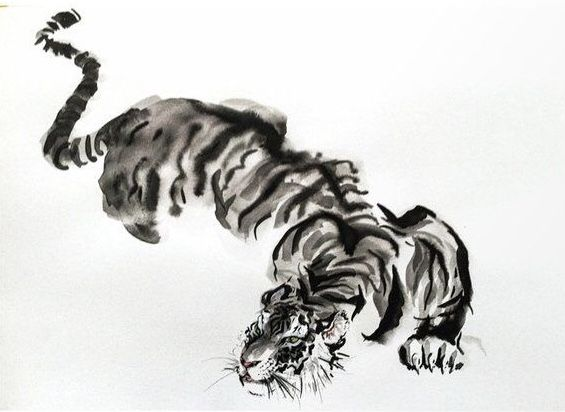

Sean Sannino
- Age20
- StudyBA Digital Society
- BaseMaastricht
- Biojust throwing parts of me in here
Maastricht University · Digital Society · FASoS
I’m Sean Scott Sannino — a first-year bachelor student interested in technology, culture, healthy living, movement, visual identity, and thoughtful experiences that actually feel meaningful.
Relaxed, health-conscious, present.
Gaming, sport, film nights, ideas, aesthetics.
About
A clearer overview of who I am and how I like to move through life.
I study Digital Society at Maastricht University, where I’m especially interested in how digital systems and technologies influence our behaviour, communication, and everyday life.
I like learning broadly and staying curious — being knowledgeable is a big goal. I enjoy internet surfing, playing videogames and also "doomscrolling" which, if done in a healthy manner, can prove beneficial in dopamine response and attention span.
I also practice sports like, badminton, rock climbing, and bouldering. I take my health seriously, prefer a balanced lifestyle, and believe fun doesn’t need to revolve around drinking or smoking.
I also love movie nights and making plans with my favourite person in the world: my girlfriend Carla, whose drawings inspired the gallery on this site.
Profile
A few things that shape how I think, live, and show up every day.
First-year bachelor student in Digital Society at FASoS, Maastricht University.
Curious, calm and knowledgeable, interested in meditation and feng shui as natural remedies for the mind.
Tennis, badminton, rock climbing, and bouldering keep my glucose levels in check and energetic.
Silly and goofy too, serious when needed :).
Symbol
When I was first diagnosed with type 1 diabetes, the tiger became the animal associated with me. It has stayed with me as a symbol of discipline, resilience, and showing up every day.

Living with type 1 diabetes means being aware, consistent, and strong in quiet ways. It is not something dramatic I perform — it is something I manage, every day. I'm not afraid to show my disease, I embrace it and am happy if people make fun of it too. The serious tone on diseases can be tiring. Joking about it makes me ( and others ) feel lighter.
That is why the tiger matters to me. It reminds me that being a warrior can also mean patience, rhythm, discipline, and staying steady even when nobody sees the effort.
Carla's Gallery
Carla's art is, as she describes it "a messy, brusque and vivid depiction of whatever seems cool to me"
Contact
Email: seansannino@gmail.com